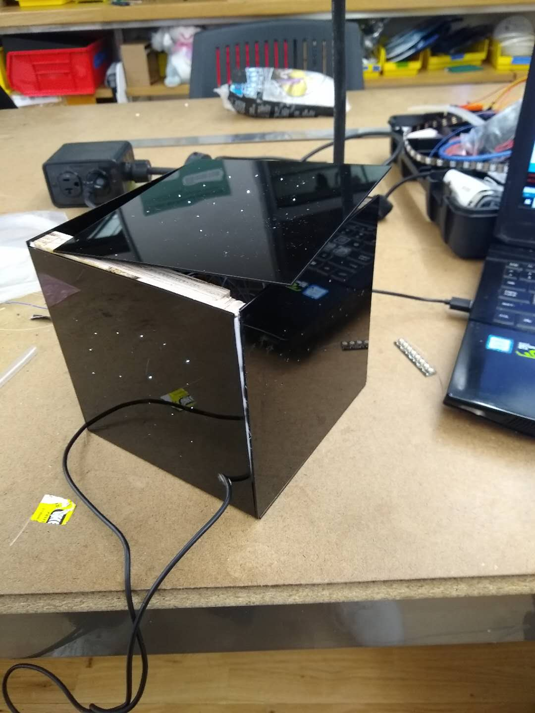

Your Field of Stars is a 6x6 cube which, when interacted with consistently, will slowly transform into a starry night sky. The cube requies at least ten seconds of touch once per day to light up one of its sides, after which no other side can be lit up until the next day. On the other hand, if a day goes by and the cube has not been interacted with at all, one of the lit sides, assuming there are any, will go dark. Your Field of Stars is something you need to interact with to keep up rapport -- at the same time, though, your interaction with it is constrained, and requires both patience and dedication.
Ideation
For a time I lived my life out of a backpack. I liked that sort of life; I didn't live that way to make a statement or anything, just because I was always on the move. At that point in time, each object I owned was something I became intimate with. My phone and my computer were, of course, important to me, but every other little thing in the constellation of my life took on an almost ritual significance: a few coins and a brochure I'd forgotten in a pocket of my bacpack, a candy bar I never got around to eating, a ticket to some museum or temple.
Items and objects are not much like people. Most noticeably, any damage done to them is there forever. If you knick your phone or crack your computer case, it won't mend itself like the human body would. Every little scuff and scrape is there indeliby. It's something that amazes me. As we interact with our environments, we leave little traces of ourselves on it, sometimes imperceptible but always there.
After seeing Slow Games by Ishac Bertran for the first time, I decided I wanted to transform this idea into some sort of rewarding interaction.
Preparatory Sketches
The first pitch for this project was "a cube with memory", and the initial sketches worked with music and visuals, since I've found those to be the strongest triggers for memory.
These early sketches were of a cube that remembered where you had touched it or remembered what kind of environment it was in, and reacted accordingly. However, these suffered from technical limitations; there were just too many variables to control for, to the extent that the hardware required would have become bloated.

Eventually, I narrowed the scope of the project down to two ideas. The first was a cube that slowly developed more and more patterns the more you interacted with it over time. The second was a cube that stored sound when you interacted with it, then replayed those later. Ultimately I went with the first idea, since I thought the concept seemed tighter.
Materials
After having gone over how to incorporate fiber optic cables into projects during class, I was struck with the idea of a cube that looked like a field of stars, which would use fiber optic cables to transmit little pinpoints of light. This is the final list of materials used in the construction of the cube:
1. 0.75mm fiber optic cables from Amazon.
2. 3 sheets of 12x24 inch black opaque acrylic.
3. Scraps of wood from the wood shop, for the cube frame.
4. Titebond quick n' thick glue, which is my go-to adhesive. I use it all the time and love it (just don't use it on anything load bearing).
5. An Arduino Nano 33 IoT as the microcontroller.
6. Aluminum foil for capacitive touch.
7. Adafruit's Neopixels, from the RGB Neopixel strip.
8. Various wires and resistors, as necessary.
9. Heat shrink tubing, to hold the fiber optics together.
Fabrication
To start, I had to determine how big I wanted my cube to be. This decision was driven by two factors: what would feel comfortable to put your hands around, and what could comfortably fit my electronics. After some measuring I settled on 6x6 inches for the dimensions of the cube, since it was big enough to feel solid, but not big enough to be unwieldy.
Since the frame of the cube wouldn't be visible, it was built from scrap wood. The wood was cut and sanded into pieces an inch thick, and fastened together with Titebond. Only the bottom of the cube uses a full frame, since this saves space and material.


For the paneling of the cube, I settled on black opaque acrylic with a depth of 1/16th of an inch. I try to avoid using acrylic due to environmental concerns, but this was the best I could do to get the impression of the blackness of space. To begin with, I tested that I could drill a hole small enough to tightly fit through a strand of my fiber optic cable. A 0.7mm hole worked well.
I made an Adobe Illustrator file for the laser cutter with the pattern of stars I wanted on the cube. The panels couldn't all be 6x6 or else they wouldn't fit together, so I made a few with a 1/8 inch tolerance.


The most time-consuming part of the process, by far, was attaching the fiber optic cables to the acrylic sheets. The holes, though they were the smallest I could have made, were not small enough to keep the fiber optic cables in with friction, so I ended up having to glue them all on. Though it was very time-consuming, the final result was acceptable.
With the structure of the cube finished, lighting the cube was next. Since I wanted each side to light up differently, I knew I'd have to control them from a different LED, which meant at least five LEDs total. I opted for Adafruit's Neopixel LEDs, since they are individually addressable, but this still left me with a problem -- how do I attach 20 fiber optic cables to one tiny LED that's not even a quarter of the inch wide? The answer was heat shrink tubing.
Using heat shrink tubing, I was able to get the fiber optic cables condensed into a small space. I then drilled five holes through a small piece of wood and taped the LEDs in the LED strip around the wood. After this, I could fit the heat shrink tubing with the fiber optics inside a wooden mount I had made.

This was the final step for the hardware, and it was after this that I designed the cube's interactions. The cube uses capacitive touch to sense when someone is holding it. To get that working was very simple: aluminum foil connected to a wire running through to the microncotroller was easy to rig up. Capacitive touch is my favorite thing to work with because it is easy to make it function even in low-tech, low-time situations, like aluminum foil taped to the inside of a plastic cube. I was worried it wouldn't be able to sense touch through the plastic, but it worked completely fine.
The final step was to make sure everything was glued together. For the next version of this project, I'd switch to using black screws with threaded inserts instead of glue.
Computation
All code is on GitHub, found by clicking here.
As stated above, the goal was to build something that required consistent, time-constrained interaction. The method of interaction was through capacitive touch, which I programmed using the capsense library for Arduino: it's a very easy library to use and has always served me well!
For keeping track of time I used the time library that Paul Stoffregen designed. When the cube is turned on it starts recording minutes, hours and days. When someone touches the cube for ten seconds at a time, it's programmed to light up a side, but this can only be done once every day. The cube keeps track of whether it was touched each day, and if a day passes without it being touched at all, one of its lit sides dims again.
Final Video
A video of the cube can be found at the top of the page. In order to facilitate a video where one can see multiple sides lighting up, I changed the code so that the side would light up once per minute instead of once per day.
Comments? Questions? Concerns? Email me here!